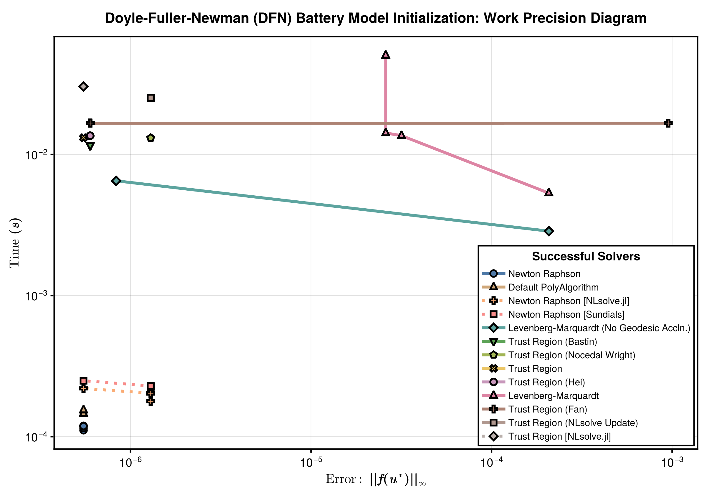

Battery Problem
These benchmarks compares the runtime and error for a range of nonlinear solvers. The solvers are implemented in NonlinearProblemLibrary.jl, where you can find the problem function declarations. We test the following solvers:
- NonlinearSolve.jl's Newton Raphson method (
NewtonRaphson()). - NonlinearSolve.jl's Newton trust region method (
TrustRegion()). - NonlinearSolve.jl's Levenberg-Marquardt method (
LevenbergMarquardt()). - NonlinearSolve.jl's Broyden method (
Broyden()). - MINPACK's Modified Powell method (
CMINPACK(method=:hybr)). - MINPACK's Levenberg-Marquardt method (
CMINPACK(method=:lm)). - NLsolveJL's Newton Raphson (
NLsolveJL(method=:newton)). - NLsolveJL's Newton trust region (
NLsolveJL()). - NLsolveJL's Anderson acceleration (
NLsolveJL(method=:anderson)). - Sundials's Newton-Krylov method (
KINSOL()).
Furthermore, for NonlinearSolve.jl's Newton Raphson method we try the following line search options (in addition to the default):
HagerZhangMoreThuenteBackTracking
and for NonlinearSolve.jl's Newton trust region we try the following radius update schemes (in addition to the default):
NLsolveNocedalWrightHeiYuanBastinFan
The plot compares the best methods from each of these categories to the various methods available from other packages. At the end of the benchmarks, we print a summary table of which solvers succeeded.
Setup
Fetch required packages.
using NonlinearSolve, MINPACK, NLsolve, LinearSolve, StaticArrays, Sundials,
BenchmarkTools, LinearAlgebra, DiffEqDevTools, CairoMakie
RUS = RadiusUpdateSchemes;Declare the benchmarked solvers (and their names and plotting options).
DEFAULT_AD = AutoForwardDiff(; chunksize = 12)
solvers_all = [
(; name = "Newton Raphson (No Line Search)", solver = Dict(:alg => NewtonRaphson(; autodiff = DEFAULT_AD))),
(; name = "Newton Raphson (Hager & Zhang Line Search)", solver = Dict(:alg => NewtonRaphson(; linesearch = LineSearchesJL(; method = HagerZhang()), autodiff = DEFAULT_AD))),
(; name = "Newton Raphson (More & Thuente Line Search)", solver = Dict(:alg => NewtonRaphson(; linesearch = LineSearchesJL(; method = MoreThuente()), autodiff = DEFAULT_AD))),
(; name = "Newton Raphson (BackTracking Line Search)", solver = Dict(:alg => NewtonRaphson(; linesearch = LineSearchesJL(; method = BackTracking()), autodiff = DEFAULT_AD))),
(; name = "Newton Krylov with GMRES", solver = Dict(:alg => NewtonRaphson(; linsolve = KrylovJL_GMRES(), autodiff = DEFAULT_AD))),
(; name = "Newton Trust Region", solver = Dict(:alg => TrustRegion(; autodiff = DEFAULT_AD)),),
(; name = "Newton Trust Region (NLsolve Radius Update)", solver = Dict(:alg => TrustRegion(; radius_update_scheme = RUS.NLsolve, autodiff = DEFAULT_AD))),
(; name = "Newton Trust Region (Nocedal Wright Radius Update)", solver = Dict(:alg => TrustRegion(; radius_update_scheme = RUS.NocedalWright, autodiff = DEFAULT_AD))),
(; name = "Newton Trust Region (Hei Radius Update)", solver = Dict(:alg => TrustRegion(; radius_update_scheme = RUS.Hei, autodiff = DEFAULT_AD))),
(; name = "Newton Trust Region (Yuan Radius Update)", solver = Dict(:alg => TrustRegion(; radius_update_scheme = RUS.Yuan, autodiff = DEFAULT_AD))),
(; name = "Newton Trust Region (Bastin Radius Update)", solver = Dict(:alg => TrustRegion(; radius_update_scheme = RUS.Bastin, autodiff = DEFAULT_AD))),
(; name = "Newton Trust Region (Fan Radius Update)", solver = Dict(:alg => TrustRegion(; radius_update_scheme = RUS.Fan, autodiff = DEFAULT_AD))),
(; name = "Levenberg-Marquardt (α_geodesic=0.75)", solver = Dict(:alg => LevenbergMarquardt(; autodiff = DEFAULT_AD))),
(; name = "Levenberg-Marquardt (α_geodesic, with Cholesky)", solver = Dict(:alg => LevenbergMarquardt(; linsolve = CholeskyFactorization(), autodiff = DEFAULT_AD))),
(; name = "Levenberg-Marquardt (No Geodesic Accln.)", solver = Dict(:alg => LevenbergMarquardt(; disable_geodesic = Val(true), autodiff = DEFAULT_AD))),
(; name = "Modified Powell (MINPACK)", solver = Dict(:alg => CMINPACK(method = :hybr))),
(; name = "Levenberg-Marquardt (MINPACK)", solver = Dict(:alg => CMINPACK(method = :lm))),
(; name = "Newton Raphson (NLsolve.jl)", solver = Dict(:alg => NLsolveJL(method = :newton))),
(; name = "Newton Trust Region (NLsolve.jl)", solver = Dict(:alg => NLsolveJL())),
(; name = "KINSOL (Sundials)", solver = Dict(:alg => KINSOL())),
(; name = "Broyden (No Line Search)", solver = Dict(:alg => Broyden())),
(; name = "Broyden (True Jacobian + No Line Search)", solver = Dict(:alg => Broyden(; init_jacobian = Val(:true_jacobian)))),
];Setup the problem
function f!(out, u, p = nothing)
out[1] = -u[33]
out[2] = -u[32]
out[3] = -u[31]
out[4] = 1.9876764062810574e10(u[1] + u[4]) - 1.9876764062810574e10u[23]
out[5] = -u[2] + (-1.5546404484393263e-11exp(-19.460872248113507(-0.4 - u[10] + u[26])))
out[6] = -1.9876764062810574e10u[14] + 1.9876764062810574e10(u[3] + u[6])
out[7] = -1.9876764062810574e10u[4] +
114676.11822324689(-exp(-19.460872248113507(-0.6608489145760508 + u[25])) +
exp(19.460872248113507(-0.6608489145760508 + u[25])))
out[8] = -1.9876764062810574e10u[12] + 1.9876764062810574e10(u[2] + u[5])
out[9] = -1.9876764062810574e10u[6] +
114676.1182232469(-exp(-19.460872248113507(-0.6608489145760508 - u[11] +
u[27])) +
exp(19.460872248113507(-0.6608489145760508 - u[11] + u[27])))
out[10] = -4.284490145672665e10u[19] + 4.284490145672665e10(u[31] + u[7])
out[11] = -4.284490145672665e10u[21] + 4.284490145672665e10(u[32] + u[8])
out[12] = -4.284490145672665e10u[22] + 4.284490145672665e10(u[33] + u[9])
out[13] = 0.025692579121085843(7.680104664733624e7(u[10] - u[11]) +
7.680104664733624e7u[10]) - 1.793773306620288e9u[12]
out[14] = -u[3] +
(-1.5546404484393263e-11exp(-19.460872248113507(-0.4 - u[11] + u[27])))
out[15] = -1.9876764062810574e10u[5] +
114676.1182232469(-exp(-19.460872248113507(-0.6608489145760506 - u[10] +
u[26])) +
exp(19.460872248113507(-0.6608489145760506 - u[10] +
u[26])))
out[16] = 0.025692579121085843(7.680104664733624e7(-u[10] + u[11]) +
1.4529008434739566e8(u[11] - u[13])) -
1.793773306620288e9u[14]
out[17] = -1.793773306620288e9u[14] - 1.4404300298567445e9(-u[26] + u[27])
out[18] = 0.025692579121085843(5.1142109690283257e8(-u[11] + u[13]) +
4.7254130462088e9(u[13] - u[15]))
out[19] = 0.025692579121085843(4.7254130462088e9(-u[13] + u[15]) +
4.7254130462088e9(u[15] - u[16]))
out[20] = 0.025692579121085843(4.7254130462088e9(-u[15] + u[16]) +
2.3040372207628164e8(u[16] - u[17]))
out[21] = 0.025692579121085843(7.200116314883803e7(-u[16] + u[17]) +
3.6900178974461965e7(u[17] - u[18])) -
2.193876971198113e9u[19]
out[22] = -4.284490145672665e10u[7] +
147554.10828979727(-exp(-19.460872248113507(-3.3618450059739535 - u[17] +
u[28])) +
exp(19.460872248113507(-3.3618450059739535 - u[17] +
u[28])))
out[23] = 0.025692579121085843(3.6900178974461965e7(-u[17] + u[18]) +
3.6900178974461965e7(u[18] - u[20])) -
2.193876971198113e9u[21]
out[24] = -4.284490145672665e10u[8] +
147554.10828979727(-exp(-19.460872248113507(-3.3618450059739535 - u[18] +
u[29])) +
exp(19.460872248113507(-3.3618450059739535 - u[18] +
u[29])))
out[25] = 948060.7678835923(-u[18] + u[20]) - 2.193876971198113e9u[22]
out[26] = -u[1] + (-1.5546404484393263e-11exp(-19.460872248113507(-0.4 + u[25])))
out[27] = -2.193876971198113e9u[22] +
0.025692579121085843(-37499.99999999999u[24] -
8.296874999999998e10(-u[29] + u[30]))
out[28] = -1.793773306620288e9u[23] +
0.025692579121085843(34090.90909090909u[24] -
5.6064049586776855e10(u[25] - u[26]))
out[29] = -1.793773306620288e9u[12] +
0.025692579121085843(-5.6064049586776855e10(-u[25] + u[26]) -
5.6064049586776855e10(u[26] - u[27]))
out[30] = -2.193876971198113e9u[19] - 2.1316811739525905e9(u[28] - u[29])
out[31] = -2.193876971198113e9u[21] +
0.025692579121085843(-8.296874999999998e10(-u[28] + u[29]) -
8.296874999999998e10(u[29] - u[30]))
out[32] = -4.284490145672665e10u[9] +
147554.10828979727(-exp(-19.460872248113507(-3.3618450059739535 - u[20] +
u[30])) +
exp(19.460872248113507(-3.3618450059739535 - u[20] +
u[30])))
out[33] = 292.3000724036127 + u[24]
nothing
end
n = 1
x_sol = [
-3.889310081682032e-13,
-5.690845522092043e-13,
-1.4900105367898274e-12,
-2.1680981422696e-5,
-3.284624075480569e-5,
-8.820027287447222e-5,
9.53999632159426e-5,
2.1138249693289567e-5,
1.1829446876191545e-5,
0.019709320908045884,
0.06927785744111935,
-3.2846241323890243e-5,
0.13786323434647954,
-8.820027436448276e-5,
0.14528607936456214,
0.15270892438264475,
0.3049460860584471,
0.3812355737657502,
9.53999632159426e-5,
0.40860971681949443,
2.1138249693289567e-5,
1.1829446876191545e-5,
-2.1680981811627007e-5,
-292.3000724036127,
0.5895178515117894,
0.5896685912243755,
0.5897784273806014,
3.837532182598256,
3.8376303660343676,
3.837750304468262,
0.0,
0.0,
0.0,
]
x_start = zeros(length(x_sol))
x_start[25:27] .= 0.6608489145760508
x_start[28:30] .= 3.3618450059739433
dict = Dict("n" => n, "start" => x_start, "sol" => x_sol, "title" => "Battery Problem")
testcase = (; prob = NonlinearProblem(f!, dict["start"]), true_sol = dict["sol"])(prob = SciMLBase.NonlinearProblem{Vector{Float64}, true, SciMLBase.NullPar
ameters, SciMLBase.NonlinearFunction{true, SciMLBase.FullSpecialize, typeof
(Main.var"##WeaveSandBox#225".f!), LinearAlgebra.UniformScaling{Bool}, Noth
ing, Nothing, Nothing, Nothing, Nothing, Nothing, Nothing, Nothing, Nothing
, Nothing, typeof(SciMLBase.DEFAULT_OBSERVED_NO_TIME), Nothing, SymbolicInd
exingInterface.SymbolCache{Nothing, Nothing, Nothing}, Nothing}, Base.Pairs
{Symbol, Union{}, Tuple{}, @NamedTuple{}}, SciMLBase.StandardNonlinearProbl
em}(SciMLBase.NonlinearFunction{true, SciMLBase.FullSpecialize, typeof(Main
.var"##WeaveSandBox#225".f!), LinearAlgebra.UniformScaling{Bool}, Nothing,
Nothing, Nothing, Nothing, Nothing, Nothing, Nothing, Nothing, Nothing, Not
hing, typeof(SciMLBase.DEFAULT_OBSERVED_NO_TIME), Nothing, SymbolicIndexing
Interface.SymbolCache{Nothing, Nothing, Nothing}, Nothing}(Main.var"##Weave
SandBox#225".f!, LinearAlgebra.UniformScaling{Bool}(true), nothing, nothing
, nothing, nothing, nothing, nothing, nothing, nothing, nothing, nothing, S
ciMLBase.DEFAULT_OBSERVED_NO_TIME, nothing, SymbolicIndexingInterface.Symbo
lCache{Nothing, Nothing, Nothing}(nothing, nothing, nothing), nothing), [0.
0, 0.0, 0.0, 0.0, 0.0, 0.0, 0.0, 0.0, 0.0, 0.0 … 0.0, 0.6608489145760508,
0.6608489145760508, 0.6608489145760508, 3.3618450059739433, 3.361845005973
9433, 3.3618450059739433, 0.0, 0.0, 0.0], SciMLBase.NullParameters(), SciML
Base.StandardNonlinearProblem(), Base.Pairs{Symbol, Union{}, Tuple{}, @Name
dTuple{}}()), true_sol = [-3.889310081682032e-13, -5.690845522092043e-13, -
1.4900105367898274e-12, -2.1680981422696e-5, -3.284624075480569e-5, -8.8200
27287447222e-5, 9.53999632159426e-5, 2.1138249693289567e-5, 1.1829446876191
545e-5, 0.019709320908045884 … -292.3000724036127, 0.5895178515117894, 0.
5896685912243755, 0.5897784273806014, 3.837532182598256, 3.8376303660343676
, 3.837750304468262, 0.0, 0.0, 0.0])Sets tolerances.
abstols = 1.0 ./ 10.0 .^ (3:0.5:6)
reltols = 1.0 ./ 10.0 .^ (3:0.5:6);Prepares various helper functions for benchmarking a specific problem.
function check_solver(prob, solver)
try
sol = solve(prob.prob, solver.solver[:alg]; abstol = 1e-5, reltol = 1e-5,
maxiters = 10000)
err = norm(sol.resid)
if !SciMLBase.successful_retcode(sol.retcode)
Base.printstyled("[Warn] Solver $(solver.name) returned retcode $(sol.retcode) with an residual norm = $(norm(sol.resid)).\n";
color = :red)
return false
elseif err > 1e3
Base.printstyled("[Warn] Solver $(solver.name) had a very large residual (norm = $(norm(sol.resid))).\n";
color = :red)
return false
elseif isinf(err) || isnan(err)
Base.printstyled("[Warn] Solver $(solver.name) had a residual of $(err).\n";
color = :red)
return false
end
Base.printstyled("[Info] Solver $(solver.name) successfully solved the problem (norm = $(norm(sol.resid))).\n";
color = :green)
catch e
Base.printstyled("[Warn] Solver $(solver.name) threw an error: $e.\n"; color = :red)
return false
end
return true
end
function generate_wpset(prob, solvers)
# Finds the solvers that can solve the problem
successful_solvers = filter(solver -> check_solver(prob, solver), solvers)
return WorkPrecisionSet(prob.prob, abstols, reltols,
getfield.(successful_solvers, :solver);
names = getfield.(successful_solvers, :name), numruns = 50, error_estimate = :l∞,
maxiters = 10000), successful_solvers
endgenerate_wpset (generic function with 1 method)Benchmarks
We here run benchmarks for each of the solvers.
Problem
wp_set, successful_solvers = generate_wpset(testcase, solvers_all)[Info] Solver Newton Raphson (No Line Search) successfully solved the probl
em (norm = 1.5941038377860503e-6).
[Warn] Solver Newton Raphson (Hager & Zhang Line Search) returned retcode M
axIters with an residual norm = 211.22117514557985.
[Warn] Solver Newton Raphson (More & Thuente Line Search) returned retcode
MaxIters with an residual norm = 215.32908275968444.
[Warn] Solver Newton Raphson (BackTracking Line Search) returned retcode In
ternalLineSearchFailed with an residual norm = 228.52744889002022.
[Warn] Solver Newton Krylov with GMRES returned retcode Unstable with an re
sidual norm = 292.3000724036127.
[Info] Solver Newton Trust Region successfully solved the problem (norm = 6
.955145971889403e-7).
[Info] Solver Newton Trust Region (NLsolve Radius Update) successfully solv
ed the problem (norm = 6.87247134580685e-7).
[Info] Solver Newton Trust Region (Nocedal Wright Radius Update) successful
ly solved the problem (norm = 1.5941545843685634e-6).
[Info] Solver Newton Trust Region (Hei Radius Update) successfully solved t
he problem (norm = 7.594866209720793e-7).
[Warn] Solver Newton Trust Region (Yuan Radius Update) returned retcode Max
Iters with an residual norm = 159.7556690579833.
[Info] Solver Newton Trust Region (Bastin Radius Update) successfully solve
d the problem (norm = 1.5942054286257434e-6).
[Info] Solver Newton Trust Region (Fan Radius Update) successfully solved t
he problem (norm = 7.521466255487002e-7).
[Info] Solver Levenberg-Marquardt (α_geodesic=0.75) successfully solved the
problem (norm = 1.2545473767673826e-5).
[Warn] Solver Levenberg-Marquardt (α_geodesic, with Cholesky) returned retc
ode MaxIters with an residual norm = 0.000308120614211419.
[Info] Solver Levenberg-Marquardt (No Geodesic Accln.) successfully solved
the problem (norm = 5.246607252366464e-7).
[Warn] Solver Modified Powell (MINPACK) returned retcode Failure with an re
sidual norm = 292.3000724036127.
[Warn] Solver Levenberg-Marquardt (MINPACK) returned retcode Failure with a
n residual norm = 292.3000724036127.
[Info] Solver Newton Raphson (NLsolve.jl) successfully solved the problem (
norm = 1.593990788654415e-6).
[Info] Solver Newton Trust Region (NLsolve.jl) successfully solved the prob
lem (norm = 7.720112236942293e-7).
[Warn] Solver KINSOL (Sundials) had a residual of NaN.
[Warn] Solver Broyden (No Line Search) returned retcode Unstable with an re
sidual norm = 292.3000724036127.
[Warn] Solver Broyden (True Jacobian + No Line Search) returned retcode Uns
table with an residual norm = 292.3000724036127.
(WorkPrecisionSet of 11 wps
, NamedTuple{(:name, :solver)}[(name = "Newton Raphson (No Line Search)", s
olver = Dict{Symbol, NonlinearSolve.GeneralizedFirstOrderAlgorithm{nothing,
:NewtonRaphson, NonlinearSolve.NoLineSearch, Missing, NonlinearSolve.Newto
nDescent{Nothing, typeof(NonlinearSolve.DEFAULT_PRECS)}, ADTypes.AutoForwar
dDiff{12, Nothing}, ADTypes.AutoForwardDiff{12, Nothing}, Nothing}}(:alg =>
NewtonRaphson(
descent = NewtonDescent(),
jacobian_ad = ADTypes.AutoForwardDiff{12, Nothing}(nothing),
forward_ad = ADTypes.AutoForwardDiff{12, Nothing}(nothing)
))), (name = "Newton Trust Region", solver = Dict{Symbol, NonlinearSolve.Ge
neralizedFirstOrderAlgorithm{nothing, :TrustRegion, Missing, NonlinearSolve
.GenericTrustRegionScheme{NonlinearSolve.RadiusUpdateSchemes.__Simple, Rati
onal{Int64}, Rational{Int64}, Rational{Int64}, Rational{Int64}, Rational{In
t64}, Nothing, Nothing, ADTypes.AutoForwardDiff{12, Nothing}, Nothing}, Non
linearSolve.Dogleg{NonlinearSolve.NewtonDescent{Nothing, typeof(NonlinearSo
lve.DEFAULT_PRECS)}, NonlinearSolve.SteepestDescent{Nothing, typeof(Nonline
arSolve.DEFAULT_PRECS)}}, ADTypes.AutoForwardDiff{12, Nothing}, ADTypes.Aut
oForwardDiff{12, Nothing}, Nothing}}(:alg => TrustRegion(
trustregion = GenericTrustRegionScheme(method = RadiusUpdateSchemes.Simp
le),
descent = Dogleg(newton_descent = NewtonDescent(), steepest_descent = St
eepestDescent()),
jacobian_ad = ADTypes.AutoForwardDiff{12, Nothing}(nothing),
forward_ad = ADTypes.AutoForwardDiff{12, Nothing}(nothing)
))), (name = "Newton Trust Region (NLsolve Radius Update)", solver = Dict{S
ymbol, NonlinearSolve.GeneralizedFirstOrderAlgorithm{nothing, :TrustRegion,
Missing, NonlinearSolve.GenericTrustRegionScheme{NonlinearSolve.RadiusUpda
teSchemes.__NLsolve, Rational{Int64}, Rational{Int64}, Rational{Int64}, Rat
ional{Int64}, Rational{Int64}, Nothing, Nothing, ADTypes.AutoForwardDiff{12
, Nothing}, Nothing}, NonlinearSolve.Dogleg{NonlinearSolve.NewtonDescent{No
thing, typeof(NonlinearSolve.DEFAULT_PRECS)}, NonlinearSolve.SteepestDescen
t{Nothing, typeof(NonlinearSolve.DEFAULT_PRECS)}}, ADTypes.AutoForwardDiff{
12, Nothing}, ADTypes.AutoForwardDiff{12, Nothing}, Nothing}}(:alg => Trust
Region(
trustregion = GenericTrustRegionScheme(method = RadiusUpdateSchemes.NLso
lve),
descent = Dogleg(newton_descent = NewtonDescent(), steepest_descent = St
eepestDescent()),
jacobian_ad = ADTypes.AutoForwardDiff{12, Nothing}(nothing),
forward_ad = ADTypes.AutoForwardDiff{12, Nothing}(nothing)
))), (name = "Newton Trust Region (Nocedal Wright Radius Update)", solver =
Dict{Symbol, NonlinearSolve.GeneralizedFirstOrderAlgorithm{nothing, :Trust
Region, Missing, NonlinearSolve.GenericTrustRegionScheme{NonlinearSolve.Rad
iusUpdateSchemes.__NocedalWright, Rational{Int64}, Rational{Int64}, Rationa
l{Int64}, Rational{Int64}, Rational{Int64}, Nothing, Nothing, ADTypes.AutoF
orwardDiff{12, Nothing}, Nothing}, NonlinearSolve.Dogleg{NonlinearSolve.New
tonDescent{Nothing, typeof(NonlinearSolve.DEFAULT_PRECS)}, NonlinearSolve.S
teepestDescent{Nothing, typeof(NonlinearSolve.DEFAULT_PRECS)}}, ADTypes.Aut
oForwardDiff{12, Nothing}, ADTypes.AutoForwardDiff{12, Nothing}, Nothing}}(
:alg => TrustRegion(
trustregion = GenericTrustRegionScheme(method = RadiusUpdateSchemes.Noce
dalWright),
descent = Dogleg(newton_descent = NewtonDescent(), steepest_descent = St
eepestDescent()),
jacobian_ad = ADTypes.AutoForwardDiff{12, Nothing}(nothing),
forward_ad = ADTypes.AutoForwardDiff{12, Nothing}(nothing)
))), (name = "Newton Trust Region (Hei Radius Update)", solver = Dict{Symbo
l, NonlinearSolve.GeneralizedFirstOrderAlgorithm{nothing, :TrustRegion, Mis
sing, NonlinearSolve.GenericTrustRegionScheme{NonlinearSolve.RadiusUpdateSc
hemes.__Hei, Rational{Int64}, Rational{Int64}, Rational{Int64}, Rational{In
t64}, Rational{Int64}, Nothing, Nothing, ADTypes.AutoForwardDiff{12, Nothin
g}, Nothing}, NonlinearSolve.Dogleg{NonlinearSolve.NewtonDescent{Nothing, t
ypeof(NonlinearSolve.DEFAULT_PRECS)}, NonlinearSolve.SteepestDescent{Nothin
g, typeof(NonlinearSolve.DEFAULT_PRECS)}}, ADTypes.AutoForwardDiff{12, Noth
ing}, ADTypes.AutoForwardDiff{12, Nothing}, Nothing}}(:alg => TrustRegion(
trustregion = GenericTrustRegionScheme(method = RadiusUpdateSchemes.Hei)
,
descent = Dogleg(newton_descent = NewtonDescent(), steepest_descent = St
eepestDescent()),
jacobian_ad = ADTypes.AutoForwardDiff{12, Nothing}(nothing),
forward_ad = ADTypes.AutoForwardDiff{12, Nothing}(nothing)
))), (name = "Newton Trust Region (Bastin Radius Update)", solver = Dict{Sy
mbol, NonlinearSolve.GeneralizedFirstOrderAlgorithm{nothing, :TrustRegion,
Missing, NonlinearSolve.GenericTrustRegionScheme{NonlinearSolve.RadiusUpdat
eSchemes.__Bastin, Rational{Int64}, Rational{Int64}, Rational{Int64}, Ratio
nal{Int64}, Rational{Int64}, Nothing, Nothing, ADTypes.AutoForwardDiff{12,
Nothing}, Nothing}, NonlinearSolve.Dogleg{NonlinearSolve.NewtonDescent{Noth
ing, typeof(NonlinearSolve.DEFAULT_PRECS)}, NonlinearSolve.SteepestDescent{
Nothing, typeof(NonlinearSolve.DEFAULT_PRECS)}}, ADTypes.AutoForwardDiff{12
, Nothing}, ADTypes.AutoForwardDiff{12, Nothing}, Nothing}}(:alg => TrustRe
gion(
trustregion = GenericTrustRegionScheme(method = RadiusUpdateSchemes.Bast
in),
descent = Dogleg(newton_descent = NewtonDescent(), steepest_descent = St
eepestDescent()),
jacobian_ad = ADTypes.AutoForwardDiff{12, Nothing}(nothing),
forward_ad = ADTypes.AutoForwardDiff{12, Nothing}(nothing)
))), (name = "Newton Trust Region (Fan Radius Update)", solver = Dict{Symbo
l, NonlinearSolve.GeneralizedFirstOrderAlgorithm{nothing, :TrustRegion, Mis
sing, NonlinearSolve.GenericTrustRegionScheme{NonlinearSolve.RadiusUpdateSc
hemes.__Fan, Rational{Int64}, Rational{Int64}, Rational{Int64}, Rational{In
t64}, Rational{Int64}, Nothing, Nothing, ADTypes.AutoForwardDiff{12, Nothin
g}, Nothing}, NonlinearSolve.Dogleg{NonlinearSolve.NewtonDescent{Nothing, t
ypeof(NonlinearSolve.DEFAULT_PRECS)}, NonlinearSolve.SteepestDescent{Nothin
g, typeof(NonlinearSolve.DEFAULT_PRECS)}}, ADTypes.AutoForwardDiff{12, Noth
ing}, ADTypes.AutoForwardDiff{12, Nothing}, Nothing}}(:alg => TrustRegion(
trustregion = GenericTrustRegionScheme(method = RadiusUpdateSchemes.Fan)
,
descent = Dogleg(newton_descent = NewtonDescent(), steepest_descent = St
eepestDescent()),
jacobian_ad = ADTypes.AutoForwardDiff{12, Nothing}(nothing),
forward_ad = ADTypes.AutoForwardDiff{12, Nothing}(nothing)
))), (name = "Levenberg-Marquardt (α_geodesic=0.75)", solver = Dict{Symbol,
NonlinearSolve.GeneralizedFirstOrderAlgorithm{true, :LevenbergMarquardt, M
issing, NonlinearSolve.LevenbergMarquardtTrustRegion{Float64}, NonlinearSol
ve.GeodesicAcceleration{NonlinearSolve.DampedNewtonDescent{Nothing, typeof(
NonlinearSolve.DEFAULT_PRECS), Float64, NonlinearSolve.LevenbergMarquardtDa
mpingFunction{Float64, Float64, Float64}}, Float64, Float64}, ADTypes.AutoF
orwardDiff{12, Nothing}, ADTypes.AutoForwardDiff{12, Nothing}, Nothing}}(:a
lg => LevenbergMarquardt(
trustregion = LevenbergMarquardtTrustRegion(β_uphill = 1.0),
descent = GeodesicAcceleration(descent = DampedNewtonDescent(initial_dam
ping = 1.0, damping_fn = LevenbergMarquardtDampingFunction()), finite_diff_
step_geodesic = 0.1, α = 0.75),
jacobian_ad = ADTypes.AutoForwardDiff{12, Nothing}(nothing),
forward_ad = ADTypes.AutoForwardDiff{12, Nothing}(nothing)
))), (name = "Levenberg-Marquardt (No Geodesic Accln.)", solver = Dict{Symb
ol, NonlinearSolve.GeneralizedFirstOrderAlgorithm{true, :LevenbergMarquardt
, Missing, NonlinearSolve.LevenbergMarquardtTrustRegion{Float64}, Nonlinear
Solve.DampedNewtonDescent{Nothing, typeof(NonlinearSolve.DEFAULT_PRECS), Fl
oat64, NonlinearSolve.LevenbergMarquardtDampingFunction{Float64, Float64, F
loat64}}, ADTypes.AutoForwardDiff{12, Nothing}, ADTypes.AutoForwardDiff{12,
Nothing}, Nothing}}(:alg => LevenbergMarquardt(
trustregion = LevenbergMarquardtTrustRegion(β_uphill = 1.0),
descent = DampedNewtonDescent(initial_damping = 1.0, damping_fn = Levenb
ergMarquardtDampingFunction()),
jacobian_ad = ADTypes.AutoForwardDiff{12, Nothing}(nothing),
forward_ad = ADTypes.AutoForwardDiff{12, Nothing}(nothing)
))), (name = "Newton Raphson (NLsolve.jl)", solver = Dict{Symbol, Nonlinear
Solve.NLsolveJL{Symbol, LineSearches.Static, NonlinearSolve.var"#259#261",
Float64, Float64}}(:alg => NLsolveJL())), (name = "Newton Trust Region (NLs
olve.jl)", solver = Dict{Symbol, NonlinearSolve.NLsolveJL{Symbol, LineSearc
hes.Static, NonlinearSolve.var"#258#260", Float64, Float64}}(:alg => NLsolv
eJL()))])Plot and Save the Plot
cycle = Cycle([:color, :linestyle, :marker], covary = true)
theme = merge(theme_latexfonts(), Theme(Lines = (cycle = cycle,),
Scatter = (cycle = cycle,)))
fig = with_theme(theme; fontsize = 32) do
fig = Figure(; size = (1300, 1000))
ax = Axis(fig[1, 1], ylabel = L"Time ($s$)", title = "Battery Problem",
xlabel = L"Error: $f(x^\ast)$ $L_{\infty}$-norm", xscale = log10, yscale = log10)
ls, scs = [], []
for (wp, solver) in zip(wp_set.wps, successful_solvers)
(; name, times, errors) = wp
errors = [err.l∞ for err in errors]
l = lines!(ax, errors, times; label = name, linewidth = 3)
sc = scatter!(ax, errors, times; label = name, markersize = 16, strokewidth = 2)
push!(ls, l)
push!(scs, sc)
end
Legend(fig[2, 1], [[l, sc] for (l, sc) in zip(ls, scs)],
[solver.name for solver in successful_solvers], position = :ct, color = :white,
framevisible=false, label = "Solvers", orientation = :horizontal,
tellwidth = false, tellheight = true, nbanks = 5, labelsize = 20)
fig
end
fig
save("battery_problem_work_precision.svg", fig)CairoMakie.Screen{SVG}Summary of successful solvers
Finally, we print a summary of which solvers successfully solved which problems.
solver_successes = [(solver in successful_solvers) ? "O" : "X" for solver in solvers_all];using PrettyTables
io = IOBuffer()
println(io, "```@raw html")
pretty_table(io, reshape(solver_successes, 1, :); backend = Val(:html),
header = getfield.(solvers_all, :name), alignment=:c)
println(io, "```")
Docs.Text(String(take!(io)))| Newton Raphson (No Line Search) | Newton Raphson (Hager & Zhang Line Search) | Newton Raphson (More & Thuente Line Search) | Newton Raphson (BackTracking Line Search) | Newton Krylov with GMRES | Newton Trust Region | Newton Trust Region (NLsolve Radius Update) | Newton Trust Region (Nocedal Wright Radius Update) | Newton Trust Region (Hei Radius Update) | Newton Trust Region (Yuan Radius Update) | Newton Trust Region (Bastin Radius Update) | Newton Trust Region (Fan Radius Update) | Levenberg-Marquardt (α_geodesic=0.75) | Levenberg-Marquardt (α_geodesic, with Cholesky) | Levenberg-Marquardt (No Geodesic Accln.) | Modified Powell (MINPACK) | Levenberg-Marquardt (MINPACK) | Newton Raphson (NLsolve.jl) | Newton Trust Region (NLsolve.jl) | KINSOL (Sundials) | Broyden (No Line Search) | Broyden (True Jacobian + No Line Search) |
|---|---|---|---|---|---|---|---|---|---|---|---|---|---|---|---|---|---|---|---|---|---|
| O | X | X | X | X | O | O | O | O | X | O | O | O | X | O | X | X | O | O | X | X | X |
Appendix
Appendix
These benchmarks are a part of the SciMLBenchmarks.jl repository, found at: https://github.com/SciML/SciMLBenchmarks.jl. For more information on high-performance scientific machine learning, check out the SciML Open Source Software Organization https://sciml.ai.
To locally run this benchmark, do the following commands:
using SciMLBenchmarks
SciMLBenchmarks.weave_file("benchmarks/NonlinearProblem","nonlinear_battery_problem.jmd")Computer Information:
Julia Version 1.10.0
Commit 3120989f39b (2023-12-25 18:01 UTC)
Build Info:
Official https://julialang.org/ release
Platform Info:
OS: Linux (x86_64-linux-gnu)
CPU: 128 × AMD EPYC 7502 32-Core Processor
WORD_SIZE: 64
LIBM: libopenlibm
LLVM: libLLVM-15.0.7 (ORCJIT, znver2)
Threads: 1 on 128 virtual cores
Environment:
JULIA_CPU_THREADS = 128
JULIA_DEPOT_PATH = /cache/julia-buildkite-plugin/depots/5b300254-1738-4989-ae0a-f4d2d937f953
Package Information:
Status `/cache/build/exclusive-amdci3-0/julialang/scimlbenchmarks-dot-jl/benchmarks/NonlinearProblem/Project.toml`
[6e4b80f9] BenchmarkTools v1.4.0
[13f3f980] CairoMakie v0.11.6
[2b5f629d] DiffEqBase v6.146.0
[f3b72e0c] DiffEqDevTools v2.44.1
[b964fa9f] LaTeXStrings v1.3.1
[7ed4a6bd] LinearSolve v2.22.1
[4854310b] MINPACK v1.2.0
[2774e3e8] NLsolve v4.5.1
[b7050fa9] NonlinearProblemLibrary v0.1.2
[8913a72c] NonlinearSolve v3.5.1
[91a5bcdd] Plots v1.40.0
[08abe8d2] PrettyTables v2.3.1
[31c91b34] SciMLBenchmarks v0.1.3
[efcf1570] Setfield v1.1.1
[47a9eef4] SparseDiffTools v2.16.0
[f1835b91] SpeedMapping v0.3.0
[90137ffa] StaticArrays v1.9.2
[c3572dad] Sundials v4.23.2And the full manifest:
Status `/cache/build/exclusive-amdci3-0/julialang/scimlbenchmarks-dot-jl/benchmarks/NonlinearProblem/Manifest.toml`
[47edcb42] ADTypes v0.2.6
[a4c015fc] ANSIColoredPrinters v0.0.1
[621f4979] AbstractFFTs v1.5.0
[398f06c4] AbstractLattices v0.3.0
[1520ce14] AbstractTrees v0.4.4
[22286c92] AccurateArithmetic v0.3.8
[79e6a3ab] Adapt v4.0.1
[27a7e980] Animations v0.4.1
[ec485272] ArnoldiMethod v0.2.0
[4fba245c] ArrayInterface v7.7.0
[4c555306] ArrayLayouts v1.5.2
[67c07d97] Automa v1.0.3
[13072b0f] AxisAlgorithms v1.1.0
[39de3d68] AxisArrays v0.4.7
[6e4b80f9] BenchmarkTools v1.4.0
[d1d4a3ce] BitFlags v0.1.8
[62783981] BitTwiddlingConvenienceFunctions v0.1.5
[fa961155] CEnum v0.5.0
[2a0fbf3d] CPUSummary v0.2.4
[96374032] CRlibm v1.0.1
[159f3aea] Cairo v1.0.5
[13f3f980] CairoMakie v0.11.6
[49dc2e85] Calculus v0.5.1
[d360d2e6] ChainRulesCore v1.20.1
[fb6a15b2] CloseOpenIntervals v0.1.12
[523fee87] CodecBzip2 v0.8.2
[944b1d66] CodecZlib v0.7.4
[a2cac450] ColorBrewer v0.4.0
[35d6a980] ColorSchemes v3.24.0
[3da002f7] ColorTypes v0.11.4
[c3611d14] ColorVectorSpace v0.10.0
[5ae59095] Colors v0.12.10
[861a8166] Combinatorics v1.0.2
[38540f10] CommonSolve v0.2.4
[bbf7d656] CommonSubexpressions v0.3.0
[34da2185] Compat v4.12.0
[2569d6c7] ConcreteStructs v0.2.3
[f0e56b4a] ConcurrentUtilities v2.3.0
[8f4d0f93] Conda v1.10.0
[187b0558] ConstructionBase v1.5.4
[d38c429a] Contour v0.6.2
[a2441757] Coverage v1.6.0
[c36e975a] CoverageTools v1.3.0
[adafc99b] CpuId v0.3.1
[a8cc5b0e] Crayons v4.1.1
[9a962f9c] DataAPI v1.16.0
[864edb3b] DataStructures v0.18.16
[e2d170a0] DataValueInterfaces v1.0.0
[927a84f5] DelaunayTriangulation v0.8.11
[8bb1440f] DelimitedFiles v1.9.1
[2b5f629d] DiffEqBase v6.146.0
[f3b72e0c] DiffEqDevTools v2.44.1
[77a26b50] DiffEqNoiseProcess v5.20.0
[163ba53b] DiffResults v1.1.0
[b552c78f] DiffRules v1.15.1
[b4f34e82] Distances v0.10.11
[31c24e10] Distributions v0.25.107
[ffbed154] DocStringExtensions v0.9.3
[e30172f5] Documenter v1.2.1
[35a29f4d] DocumenterTools v0.1.19
[fa6b7ba4] DualNumbers v0.6.8
[4e289a0a] EnumX v1.0.4
[f151be2c] EnzymeCore v0.6.5
[429591f6] ExactPredicates v2.2.7
[460bff9d] ExceptionUnwrapping v0.1.10
[e2ba6199] ExprTools v0.1.10
[411431e0] Extents v0.1.2
[c87230d0] FFMPEG v0.4.1
[7a1cc6ca] FFTW v1.8.0
[7034ab61] FastBroadcast v0.2.8
[9aa1b823] FastClosures v0.3.2
[29a986be] FastLapackInterface v2.0.1
[5789e2e9] FileIO v1.16.2
[8fc22ac5] FilePaths v0.8.3
[48062228] FilePathsBase v0.9.21
[1a297f60] FillArrays v1.9.3
[6a86dc24] FiniteDiff v2.22.0
[53c48c17] FixedPointNumbers v0.8.4
[59287772] Formatting v0.4.2
[f6369f11] ForwardDiff v0.10.36
[b38be410] FreeType v4.1.1
[663a7486] FreeTypeAbstraction v0.10.1
[069b7b12] FunctionWrappers v1.1.3
[77dc65aa] FunctionWrappersWrappers v0.1.3
[46192b85] GPUArraysCore v0.1.6
[28b8d3ca] GR v0.73.1
[cf35fbd7] GeoInterface v1.3.3
[5c1252a2] GeometryBasics v0.4.10
⌃ [d7ba0133] Git v1.2.1
[a2bd30eb] Graphics v1.1.2
[86223c79] Graphs v1.9.0
[3955a311] GridLayoutBase v0.10.0
[42e2da0e] Grisu v1.0.2
[708ec375] Gumbo v0.8.2
[cd3eb016] HTTP v1.10.1
[eafb193a] Highlights v0.5.2
[3e5b6fbb] HostCPUFeatures v0.1.16
[34004b35] HypergeometricFunctions v0.3.23
[7073ff75] IJulia v1.24.2
[b5f81e59] IOCapture v0.2.4
[615f187c] IfElse v0.1.1
[2803e5a7] ImageAxes v0.6.11
[c817782e] ImageBase v0.1.7
[a09fc81d] ImageCore v0.10.2
[82e4d734] ImageIO v0.6.7
[bc367c6b] ImageMetadata v0.9.9
[9b13fd28] IndirectArrays v1.0.0
[d25df0c9] Inflate v0.1.4
[18e54dd8] IntegerMathUtils v0.1.2
[a98d9a8b] Interpolations v0.15.1
[d1acc4aa] IntervalArithmetic v0.22.5
[8197267c] IntervalSets v0.7.8
[92d709cd] IrrationalConstants v0.2.2
[f1662d9f] Isoband v0.1.1
[c8e1da08] IterTools v1.10.0
[82899510] IteratorInterfaceExtensions v1.0.0
[1019f520] JLFzf v0.1.7
[692b3bcd] JLLWrappers v1.5.0
[682c06a0] JSON v0.21.4
[b835a17e] JpegTurbo v0.1.5
[ef3ab10e] KLU v0.4.1
[5ab0869b] KernelDensity v0.6.8
[ba0b0d4f] Krylov v0.9.5
[b964fa9f] LaTeXStrings v1.3.1
[23fbe1c1] Latexify v0.16.1
[10f19ff3] LayoutPointers v0.1.15
[0e77f7df] LazilyInitializedFields v1.2.2
[50d2b5c4] Lazy v0.15.1
[5078a376] LazyArrays v1.8.3
[8cdb02fc] LazyModules v0.3.1
[9c8b4983] LightXML v0.9.1
[d3d80556] LineSearches v7.2.0
[9b3f67b0] LinearAlgebraX v0.2.7
[7ed4a6bd] LinearSolve v2.22.1
[2ab3a3ac] LogExpFunctions v0.3.26
[e6f89c97] LoggingExtras v1.0.3
[bdcacae8] LoopVectorization v0.12.166
[4854310b] MINPACK v1.2.0
[1914dd2f] MacroTools v0.5.13
[ee78f7c6] Makie v0.20.5
[20f20a25] MakieCore v0.7.3
[d125e4d3] ManualMemory v0.1.8
[dbb5928d] MappedArrays v0.4.2
[d0879d2d] MarkdownAST v0.1.2
[b8f27783] MathOptInterface v1.25.2
[0a4f8689] MathTeXEngine v0.5.7
[a3b82374] MatrixFactorizations v2.1.0
[bb5d69b7] MaybeInplace v0.1.1
[739be429] MbedTLS v1.1.9
[442fdcdd] Measures v0.3.2
[e1d29d7a] Missings v1.1.0
[7475f97c] Mods v2.2.4
[e94cdb99] MosaicViews v0.3.4
[46d2c3a1] MuladdMacro v0.2.4
[3b2b4ff1] Multisets v0.4.4
[ffc61752] Mustache v1.0.19
[d8a4904e] MutableArithmetics v1.4.0
[d41bc354] NLSolversBase v7.8.3
[2774e3e8] NLsolve v4.5.1
[77ba4419] NaNMath v1.0.2
[f09324ee] Netpbm v1.1.1
[b7050fa9] NonlinearProblemLibrary v0.1.2
[8913a72c] NonlinearSolve v3.5.1
[510215fc] Observables v0.5.5
[6fe1bfb0] OffsetArrays v1.13.0
[52e1d378] OpenEXR v0.3.2
[4d8831e6] OpenSSL v1.4.1
[429524aa] Optim v1.9.1
[bac558e1] OrderedCollections v1.6.3
[90014a1f] PDMats v0.11.31
[f57f5aa1] PNGFiles v0.4.3
[65ce6f38] PackageExtensionCompat v1.0.2
[19eb6ba3] Packing v0.5.0
[5432bcbf] PaddedViews v0.5.12
[d96e819e] Parameters v0.12.3
[69de0a69] Parsers v2.8.1
[2ae35dd2] Permutations v0.4.20
[3bbf5609] PikaParser v0.6.1
[b98c9c47] Pipe v1.3.0
[eebad327] PkgVersion v0.3.3
[ccf2f8ad] PlotThemes v3.1.0
[995b91a9] PlotUtils v1.4.0
[91a5bcdd] Plots v1.40.0
[e409e4f3] PoissonRandom v0.4.4
[f517fe37] Polyester v0.7.9
[1d0040c9] PolyesterWeave v0.2.1
[647866c9] PolygonOps v0.1.2
[f27b6e38] Polynomials v4.0.6
[85a6dd25] PositiveFactorizations v0.2.4
[d236fae5] PreallocationTools v0.4.17
[aea7be01] PrecompileTools v1.2.0
[21216c6a] Preferences v1.4.1
[08abe8d2] PrettyTables v2.3.1
[27ebfcd6] Primes v0.5.5
[92933f4c] ProgressMeter v1.9.0
[4b34888f] QOI v1.0.0
[1fd47b50] QuadGK v2.9.4
[74087812] Random123 v1.6.2
[e6cf234a] RandomNumbers v1.5.3
[b3c3ace0] RangeArrays v0.3.2
[c84ed2f1] Ratios v0.4.5
[3cdcf5f2] RecipesBase v1.3.4
[01d81517] RecipesPipeline v0.6.12
[731186ca] RecursiveArrayTools v3.6.2
[f2c3362d] RecursiveFactorization v0.2.21
[189a3867] Reexport v1.2.2
[2792f1a3] RegistryInstances v0.1.0
[05181044] RelocatableFolders v1.0.1
[ae029012] Requires v1.3.0
[ae5879a3] ResettableStacks v1.1.1
[286e9d63] RingLists v0.2.8
[79098fc4] Rmath v0.7.1
[47965b36] RootedTrees v2.21.0
[5eaf0fd0] RoundingEmulator v0.2.1
[7e49a35a] RuntimeGeneratedFunctions v0.5.12
[94e857df] SIMDTypes v0.1.0
[476501e8] SLEEFPirates v0.6.42
[322a6be2] Sass v0.2.0
[0bca4576] SciMLBase v2.21.1
[31c91b34] SciMLBenchmarks v0.1.3
[c0aeaf25] SciMLOperators v0.3.7
[6c6a2e73] Scratch v1.2.1
[efcf1570] Setfield v1.1.1
[65257c39] ShaderAbstractions v0.4.0
[992d4aef] Showoff v1.0.3
[73760f76] SignedDistanceFields v0.4.0
[777ac1f9] SimpleBufferStream v1.1.0
[55797a34] SimpleGraphs v0.8.6
[727e6d20] SimpleNonlinearSolve v1.3.1
[ec83eff0] SimplePartitions v0.3.1
[cc47b68c] SimplePolynomials v0.2.17
[a6525b86] SimpleRandom v0.3.1
[699a6c99] SimpleTraits v0.9.4
[45858cf5] Sixel v0.1.3
[b85f4697] SoftGlobalScope v1.1.0
[a2af1166] SortingAlgorithms v1.2.1
[47a9eef4] SparseDiffTools v2.16.0
[e56a9233] Sparspak v0.3.9
[276daf66] SpecialFunctions v2.3.1
[f1835b91] SpeedMapping v0.3.0
[c5dd0088] StableHashTraits v1.1.6
[cae243ae] StackViews v0.1.1
[aedffcd0] Static v0.8.8
[0d7ed370] StaticArrayInterface v1.5.0
[90137ffa] StaticArrays v1.9.2
[1e83bf80] StaticArraysCore v1.4.2
[82ae8749] StatsAPI v1.7.0
[2913bbd2] StatsBase v0.34.2
[4c63d2b9] StatsFuns v1.3.0
[7792a7ef] StrideArraysCore v0.5.2
[69024149] StringEncodings v0.3.7
[892a3eda] StringManipulation v0.3.4
[09ab397b] StructArrays v0.6.17
[c3572dad] Sundials v4.23.2
[2efcf032] SymbolicIndexingInterface v0.3.5
[3783bdb8] TableTraits v1.0.1
[bd369af6] Tables v1.11.1
[62fd8b95] TensorCore v0.1.1
[8290d209] ThreadingUtilities v0.5.2
⌅ [731e570b] TiffImages v0.6.8
[a759f4b9] TimerOutputs v0.5.23
[3bb67fe8] TranscodingStreams v0.10.2
[d5829a12] TriangularSolve v0.1.20
[410a4b4d] Tricks v0.1.8
[981d1d27] TriplotBase v0.1.0
[781d530d] TruncatedStacktraces v1.4.0
[9d95972d] TupleTools v1.4.3
[5c2747f8] URIs v1.5.1
[3a884ed6] UnPack v1.0.2
[1cfade01] UnicodeFun v0.4.1
[1986cc42] Unitful v1.19.0
[45397f5d] UnitfulLatexify v1.6.3
[41fe7b60] Unzip v0.2.0
[3d5dd08c] VectorizationBase v0.21.65
[81def892] VersionParsing v1.3.0
[19fa3120] VertexSafeGraphs v0.2.0
[44d3d7a6] Weave v0.10.12
[efce3f68] WoodburyMatrices v1.0.0
[ddb6d928] YAML v0.4.9
[c2297ded] ZMQ v1.2.2
[6e34b625] Bzip2_jll v1.0.8+1
[4e9b3aee] CRlibm_jll v1.0.1+0
[83423d85] Cairo_jll v1.16.1+1
[5ae413db] EarCut_jll v2.2.4+0
[2702e6a9] EpollShim_jll v0.0.20230411+0
[2e619515] Expat_jll v2.5.0+0
⌃ [b22a6f82] FFMPEG_jll v4.4.2+2
[f5851436] FFTW_jll v3.3.10+0
[a3f928ae] Fontconfig_jll v2.13.93+0
[d7e528f0] FreeType2_jll v2.13.1+0
[559328eb] FriBidi_jll v1.0.10+0
[0656b61e] GLFW_jll v3.3.9+0
[d2c73de3] GR_jll v0.73.1+0
[78b55507] Gettext_jll v0.21.0+0
⌅ [f8c6e375] Git_jll v2.34.1+0
[7746bdde] Glib_jll v2.76.5+0
[3b182d85] Graphite2_jll v1.3.14+0
[528830af] Gumbo_jll v0.10.2+0
[2e76f6c2] HarfBuzz_jll v2.8.1+1
[905a6f67] Imath_jll v3.1.7+0
[1d5cc7b8] IntelOpenMP_jll v2024.0.2+0
[aacddb02] JpegTurbo_jll v3.0.1+0
[c1c5ebd0] LAME_jll v3.100.1+0
[88015f11] LERC_jll v3.0.0+1
[1d63c593] LLVMOpenMP_jll v15.0.7+0
[dd4b983a] LZO_jll v2.10.1+0
⌅ [e9f186c6] Libffi_jll v3.2.2+1
[d4300ac3] Libgcrypt_jll v1.8.7+0
[7e76a0d4] Libglvnd_jll v1.6.0+0
[7add5ba3] Libgpg_error_jll v1.42.0+0
[94ce4f54] Libiconv_jll v1.17.0+0
[4b2f31a3] Libmount_jll v2.35.0+0
⌅ [89763e89] Libtiff_jll v4.5.1+1
[38a345b3] Libuuid_jll v2.36.0+0
[856f044c] MKL_jll v2024.0.0+0
[e7412a2a] Ogg_jll v1.3.5+1
[18a262bb] OpenEXR_jll v3.1.4+0
⌅ [9bd350c2] OpenSSH_jll v8.9.0+1
⌅ [458c3c95] OpenSSL_jll v1.1.23+0
[efe28fd5] OpenSpecFun_jll v0.5.5+0
[91d4177d] Opus_jll v1.3.2+0
[36c8627f] Pango_jll v1.50.14+0
[30392449] Pixman_jll v0.42.2+0
⌃ [c0090381] Qt6Base_jll v6.5.2+2
[f50d1b31] Rmath_jll v0.4.0+0
⌅ [fb77eaff] Sundials_jll v5.2.2+0
[a44049a8] Vulkan_Loader_jll v1.3.243+0
[a2964d1f] Wayland_jll v1.21.0+1
[2381bf8a] Wayland_protocols_jll v1.31.0+0
[02c8fc9c] XML2_jll v2.12.2+0
[aed1982a] XSLT_jll v1.1.34+0
[ffd25f8a] XZ_jll v5.4.5+0
[f67eecfb] Xorg_libICE_jll v1.0.10+1
[c834827a] Xorg_libSM_jll v1.2.3+0
[4f6342f7] Xorg_libX11_jll v1.8.6+0
[0c0b7dd1] Xorg_libXau_jll v1.0.11+0
[935fb764] Xorg_libXcursor_jll v1.2.0+4
[a3789734] Xorg_libXdmcp_jll v1.1.4+0
[1082639a] Xorg_libXext_jll v1.3.4+4
[d091e8ba] Xorg_libXfixes_jll v5.0.3+4
[a51aa0fd] Xorg_libXi_jll v1.7.10+4
[d1454406] Xorg_libXinerama_jll v1.1.4+4
[ec84b674] Xorg_libXrandr_jll v1.5.2+4
[ea2f1a96] Xorg_libXrender_jll v0.9.10+4
[14d82f49] Xorg_libpthread_stubs_jll v0.1.1+0
[c7cfdc94] Xorg_libxcb_jll v1.15.0+0
[cc61e674] Xorg_libxkbfile_jll v1.1.2+0
[e920d4aa] Xorg_xcb_util_cursor_jll v0.1.4+0
[12413925] Xorg_xcb_util_image_jll v0.4.0+1
[2def613f] Xorg_xcb_util_jll v0.4.0+1
[975044d2] Xorg_xcb_util_keysyms_jll v0.4.0+1
[0d47668e] Xorg_xcb_util_renderutil_jll v0.3.9+1
[c22f9ab0] Xorg_xcb_util_wm_jll v0.4.1+1
[35661453] Xorg_xkbcomp_jll v1.4.6+0
[33bec58e] Xorg_xkeyboard_config_jll v2.39.0+0
[c5fb5394] Xorg_xtrans_jll v1.5.0+0
[8f1865be] ZeroMQ_jll v4.3.4+0
[3161d3a3] Zstd_jll v1.5.5+0
[35ca27e7] eudev_jll v3.2.9+0
[214eeab7] fzf_jll v0.43.0+0
[1a1c6b14] gperf_jll v3.1.1+0
[9a68df92] isoband_jll v0.2.3+0
[a4ae2306] libaom_jll v3.4.0+0
[0ac62f75] libass_jll v0.15.1+0
[2db6ffa8] libevdev_jll v1.11.0+0
[f638f0a6] libfdk_aac_jll v2.0.2+0
[36db933b] libinput_jll v1.18.0+0
[b53b4c65] libpng_jll v1.6.40+0
[47bcb7c8] libsass_jll v3.6.4+0
[075b6546] libsixel_jll v1.10.3+0
[a9144af2] libsodium_jll v1.0.20+0
[f27f6e37] libvorbis_jll v1.3.7+1
[009596ad] mtdev_jll v1.1.6+0
[1270edf5] x264_jll v2021.5.5+0
[dfaa095f] x265_jll v3.5.0+0
[d8fb68d0] xkbcommon_jll v1.4.1+1
[0dad84c5] ArgTools v1.1.1
[56f22d72] Artifacts
[2a0f44e3] Base64
[8bf52ea8] CRC32c
[ade2ca70] Dates
[8ba89e20] Distributed
[f43a241f] Downloads v1.6.0
[7b1f6079] FileWatching
[9fa8497b] Future
[b77e0a4c] InteractiveUtils
[4af54fe1] LazyArtifacts
[b27032c2] LibCURL v0.6.4
[76f85450] LibGit2
[8f399da3] Libdl
[37e2e46d] LinearAlgebra
[56ddb016] Logging
[d6f4376e] Markdown
[a63ad114] Mmap
[ca575930] NetworkOptions v1.2.0
[44cfe95a] Pkg v1.10.0
[de0858da] Printf
[9abbd945] Profile
[3fa0cd96] REPL
[9a3f8284] Random
[ea8e919c] SHA v0.7.0
[9e88b42a] Serialization
[1a1011a3] SharedArrays
[6462fe0b] Sockets
[2f01184e] SparseArrays v1.10.0
[10745b16] Statistics v1.10.0
[4607b0f0] SuiteSparse
[fa267f1f] TOML v1.0.3
[a4e569a6] Tar v1.10.0
[8dfed614] Test
[cf7118a7] UUIDs
[4ec0a83e] Unicode
[e66e0078] CompilerSupportLibraries_jll v1.0.5+1
[deac9b47] LibCURL_jll v8.4.0+0
[e37daf67] LibGit2_jll v1.6.4+0
[29816b5a] LibSSH2_jll v1.11.0+1
[c8ffd9c3] MbedTLS_jll v2.28.2+1
[14a3606d] MozillaCACerts_jll v2023.1.10
[4536629a] OpenBLAS_jll v0.3.23+2
[05823500] OpenLibm_jll v0.8.1+2
[efcefdf7] PCRE2_jll v10.42.0+1
[bea87d4a] SuiteSparse_jll v7.2.1+1
[83775a58] Zlib_jll v1.2.13+1
[8e850b90] libblastrampoline_jll v5.8.0+1
[8e850ede] nghttp2_jll v1.52.0+1
[3f19e933] p7zip_jll v17.4.0+2
Info Packages marked with ⌃ and ⌅ have new versions available. Those with ⌃ may be upgradable, but those with ⌅ are restricted by compatibility constraints from upgrading. To see why use `status --outdated -m`